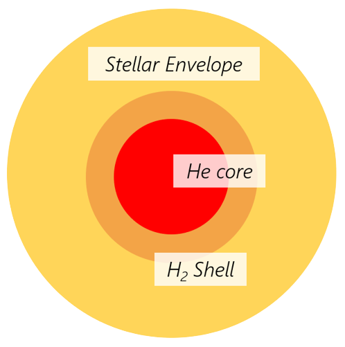

Evolution of a sun-like star
This information is useful, for the most part because you are living next to a sun(-like) star.
We start at the end of the main sequence, when the star runs out of fuel (hydrogen) in the core
Subgiant
Eventually the core runs out of hydrogen to fuse. It becomes inert (unable to "react" via nuclear processes, i.e. fusion). Fusion stops entirely. There is no longer any pressure support, so gravity pulls outer layers inwards, which causes the core to contract and heat up until the area around the core heats up enough to start fusing hydrogen, creating a shell of hydrogen fusion. (this shell lasts 1 billion years for the sun)

structure of a subgiant
Red Giant Branch (RGB)
Due to the increased temperature, the hydrogen fusion rate (in the shell) is faster and radiation pressure is higher. This actually causes the outer layers of the star to expand to maintain the pressure gradient. Due to decreased pressure and increase surface area this causes the surface temperature to drop and for it to turn red. It will expand out the orbit of venus so they will be gone.
The outer envelope is so extended that it is only weakly held by gravitational force to the rest of the star and easily ejected. However the contracted helium core is incredibly dense. It is only about one-third its original size.
During this time the sun loses about a quarter of it's total mass in a strong stellar wind. The mass lost is from the outer envelope and not the core.
The core contraction and envelope expansion is very rapid, taking only a few million years. In this time the temperature of the star will cool from its main sequence value of 6,000–30,000 K to around 5,000 K. Hence there are very few stars in that area in the HR diagram


hertzsprung gap
Helium Flash
Hydrogen fusion in the shell produces more helium. This gets dumped onto the core, adding to its mass, causing it to heat up even more. When the core temperature reaches 100 million K, the helium nuclei now have sufficient kinetic energy to overcome the strong coulombic repulsion and fuse together, forming carbon-12 in a two-stage process. (triple alpha process)
It first fuses 2 He-4 to Be-8. However, this is slightly endothermic, and Be-8 is highly unstable and decays back into smaller nuclei with a half-life of \(8.19 \times 10^{−17}s\). Unless within that time a third alpha particle fuses with the beryllium-8 nucleus to produce an excited resonance state of carbon-12 Holye state. But even this usually goes back to 3 He-4 nuclei, but about every 1 in 2423.1 times it releases energy and changes into the stable base form of carbon-12


As a side effect of the process, some carbon nuclei fuse with additional helium to produce a stable isotope of oxygen and energy:

Once the temperature is hot enough helium fusion begins in a matter of minutes or hours. This sudden onset of helium core fusion (or "burning") is called the helium flash.
Not all stars go through helium flash
For stars greater \(>2.5M_\bigodot\), there is no helium flash, instead it begins burning gradually.
Lower-mass stars do not produce enough gravitational pressure to initiate normal helium fusion. As the hydrogen in the core is exhausted, some of the helium left behind is instead compacted into degenerate matter (matter so dense that quantum effects are significant). The particles get packed down so densely its almost like they don't have a temperature. They almost get to the point where the particles are stacked like bricks, so the electrons are almost incapable of moving (The nuclei can still wiggle). The core is supported against gravitational collapse by quantum mechanical pressure rather than thermal pressure. This increases the density and temperature of the core until it reaches approximately 100 million kelvin, which is hot enough to cause helium fusion.
However, a fundamental quality of degenerate matter is that increases in temperature do not produce an increase in volume of the matter until the thermal pressure becomes high enough to exceed degeneracy pressure (quantum mechanical pressure, which is really high). In this case, the helium fusion increases the temperature, which increases the fusion rate, which further increases the temperature in a runaway reaction. This produces a flash of very intense helium fusion that lasts only a few minutes, but briefly emits energy at a rate comparable to the entire Milky Way galaxy.
In the case of normal low-mass stars, the enormous energy release causes the core to come out of degeneracy, allowing it to expand (because of the insane thermal energy), and any left-over energy is absorbed into the star's upper layers. Thus the helium flash is mostly undetectable to observation.
Red clump / Horizontal Branch (HB)
The energy released from the helium flash allows the core to cool and expand, and also expands the hydrogen-burning shell further out in the star. The expansion of the hydrogen-burning shell reduces its temperature, density, and hence its energy generation and radiation pressure. In some mass ranges, hydrogen fusion ceases. The outer hydrogen-rich envelope of the star reacts to this temperature decrease by contracting. Since \(L=4\pi R^2\sigma T^4\), the contraction would lead to an increase in the effective surface temperature if the luminosity was constant. However, the luminosity of the star is also lower, so the increase in temperature is less pronounced. The star’s new stable location is slightly down and slightly towards the left of the giant branch. Because the new configuration of stable core-helium burning and shell-hydrogen burning is reasonably long lived, stars remain in this region of the H–R diagram for some time. The location is recognized observationally as a clump of stars in the H–R diagram, due to the slow evolution through this phase of life, and they are called red-giant clump stars


H–R diagram of the H 4 star cluster showing a populated main sequence and a red-giant branch with distinct core-helium burning red-giant clump stars. \(m_v\) is absolute magnitude and \(B-V\) is a color index
For stars with lower metal (anything heavier than helium) content, they have higher temperatures so their location in the H–R diagram is called the horizontal branch. This is basically the "helium main sequence"

structure of a star on the red clump/horizontal branch


H–R diagrams of the globular cluster M3, showing the horizontal branch (HB) which are populated by core-helium burning stars with a low metal content. These clusters have ages around \(13\times10^9\) years, and their metal content is only \(\approx\frac{1}{30}\) of the solar value. \(I-V\) is a color index.
Our sun has sufficient helium fuel for this stage to last for about 100 million years
fun fact: more stars less massive than \(2M_\odot~2.5M_\odot\), the helium cores have the same mass when helium fusion starts, regardless of total solar mass. So the helium fusion luminosity on the horizontal branch is the same (Hydrogen shell fusion causes total luminosity to vary, but for most stars they are very similar)
Asymptotic Giant Branch (AGB)
Eventually all the helium in the core has fused into carbon and oxygen and so the core becomes inert again and contracts. Carbon and oxygen nuclei have more protons in them than helium does so the repulsion is greater, and require higher temperature and pressure. (Carbon burning, the next available fusion process, occurs at 500-900 million K and at densities of \(3 \times 10^9 kg/m^3\)). Stars less than 8 times the mass of our sun can't reach those temperatures and densities. The core contraction does however generate sufficient heat for the surrounding layer of helium to start fusing, that is helium shell burning starts. Energy from the helium-burning in turn heats up surrounding unused hydrogen which also starts shell burning. This is basically the RGB all over again, and for the same reason the star expands to a red giant (again)

structure of an AGB star
If the helium fuel in the He-burning shell runs low, the outward radiation pressure drops off. As this was previously holding out the shell of hydrogen gas, this shell now contracts, heats up enough to ignite and start fusion, converting hydrogen to helium. This helium "ash" in turn falls onto the helium shell, heating it up until the helium shell is hot enough to re-ignite in a helium-shell flash, producing a thermal pulse. Increased radiation pressure now causes the hydrogen shell to expand and cool, shutting down H-shell fusion.
Over time the frequency of thermal pulses increases. During a thermal pulse nuclei within the helium-burning shell can be synthesised into heavier nuclei (up to Bismuth) through the capture of neutrons and radioactive beta decay (s-process)
Large convection currents in AGB stars carry material produced in the thin helium-burning shell up to the surface which are ejected, which contains heavier elements.
Note
Helium Fusion is extremely sensitive to temperature. (proportional to something like \(T^{40}\)). If T at 100 million K increases by \(10%\), fusion rate increases 45x
As a consequence of this, a small change in temperature can lead to enormous change in fusion energy output. AGB Stars experience huge thermal pulses that destabilize the outer envelope.
Due to these thermal pulses, the outer envelope gets ejected as a fast wind (this only takes 100,000 years). The C-O core continues to contract, but the wind takes the weight of the envelope off, so the core doesn't heat up as much, and never reaches the 600 million K required to carbon fusion. The continued thermal pulses results in the envelope separating from the core. This reduces the Sun's mass to about 60% of the original mass
Post-AGB
The last of the thermal pulses blows away what is left of the envelope (over about a few thousand years). As the last of the envelope comes off, the hot C-O core of the Sun is unveiled. The temperature goes from 4000K (envelope) to 120000K (bare core). The luminosity stays constant. This is represented on the HR diagram as it moving horizontally towards the left side.
Planetary Nebulae
Once the outer layers of the star are ejected the core is left exposed. It is hot enough to emit ultraviolet light to ionize the ejected material, which causes the cloud to glow
A planetary nebula only lasts for about 10,000-20,000 years before dispersing into interstellar medium.


cat eye nebula (top/left) and helix nebula (bottom/right) are both planetary nebulae


Stellar evolutionary track
White dwarf
The contracting C-O core becomes so dense that a new gas law takes over - a degenerate electron gas. The pressure becomes independent of the temperature, so the pressure grows rapidly and counterracts gravity. The collapse stops at \(0.01R_\bigodot\) which is around the size of Earth. The degenerate core becomes a white dwarf. It has a mass of around \(0.54M_\bigodot\). It now begins a long, slow cooling phase that will last for maybe a trillion years as it slowly fades away.